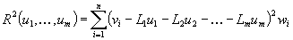
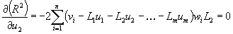
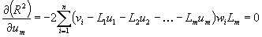
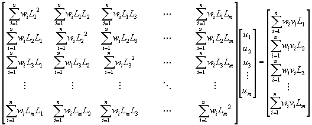
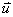

The function to be used for the least squares method is called R2 and is defined as follows:

|
u1 through um |
are the desired nodal values of the target element |
|
vi |
is the input
value i (from the source mesh) |
|
L1 through Lm |
are the shape function values of the target element for
input value i |
|
wi |
is the weight factor for input value i, the volume
fraction of the source element within the target element |
The derivatives of this function to all desired values (u1 through um) are set to zero.

etc. until

This gives us in matrix notation

from which the vector
